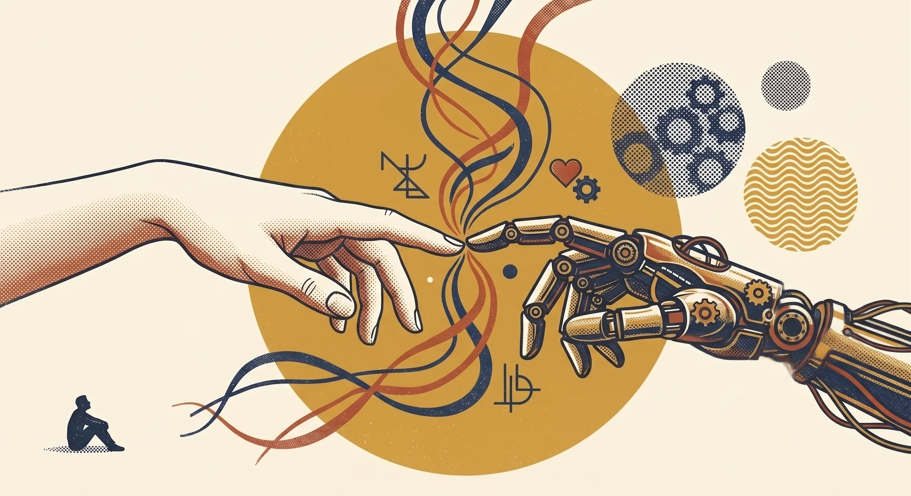

Sometimes you don't need another idea. You need the thing built, and permission to hand off the building.
✕ fallacy of guilt Solutions answers "is this cheating?" You set the dial: how much it does, and how much you keep.

The tool can be made for you.
Stop shopping for software.
Hand AI the task.
You have an idea. It's been there for months. A small tool you keep mocking up in your head, the one that would save you twenty minutes a day if it existed. A pile of notes you keep meaning to organize. A primer you wish someone had handed you on day one.
For forty years we lived inside generic tools. Excel, Word and Photoshop were built for millions of people at once, and we bent our work to fit them. That's changing. AI now builds working software to order: one tool, for one job, for one team. The tool fits the work, where the work used to fit the tool. You ask for an outcome, and fewer things start from a blank page.
The hardest part is starting. Most people stall with a half-formed task and a feeling they should figure it out properly first. You don't need to. Describe the thing the way you'd describe it to a capable colleague: what it's for, who uses it, what good looks like. Ask for a rough version today. Then tell it what's wrong.
If handing it off feels like cheating, look at what you're handing off. There's a dial. Turned down, AI does the task and you check it. Turned up, it shows you the method, or coaches you through doing it yourself. Use the low setting for work you already know and the high one for work you want to learn. Keep the judgment either way: what's worth building, whether it's right, when it's done.
Expect it to get you most of the way. It does half, sometimes 80%, and the rest is yours. That last part is where your experience counts, so plan time for it.
If you lead a team, hold off on the big platform search. Ask each person for one task they'd hand over, build those small tools first, and keep them where everyone can reuse them. A team that owns ten small tools it understands is ahead of one waiting on a vendor.
Tap any card. Each one is a small analogy that lowers the bar. The back has the rest of it.
Pick one. Do it today. See what happens.
turn over↻Three things you can do in the next hour with no setup. The email you've been putting off. Paste in the situation, get a draft, edit it, send it. The recap nobody wants to write. Paste your notes and ask for a clean version. The thing you need to understand fast. A new category, or a competitor you've never heard of: ask for a briefing in plain language.
Try this: pick one of the three and do it before lunch. turn back↺The article will still be there. Open Claude and type the actual problem.
turn over↻Close the tab about AI and open one with AI. Pick whichever of these costs you the most time. The proposal you're dreading: paste the brief and ask for a first summary. The client you know nothing about: ask for a briefing as if you had ten minutes before the call. The first result that surprises you is the moment it changes.
Try this: open the tab now and type the problem the way you'd say it out loud. turn back↺Coder, analyst, strategist, editor. Speaks most languages. Available at any hour.
turn over↻It sits in a browser tab you open twice a week to ask one question. People who get the most from it give it real work and real background, the way they would a new hire. You wouldn't hire a strong strategist and only ask them to fix your typos. Give it the brief, the files and the goal, and ask for the whole first pass.
Try this: hand it the whole brief once, and compare the result. turn back↺Four small builds to start with. Each one is a task you describe and a first version you get back the same day.
Imagine if the thing you do by hand every morning took one click. Describe the steps and ask for a tool that does them.
Imagine if your notes, decisions and old projects sat in one place AI could read. Start with a single folder and add to it weekly.
Imagine if the three spreadsheets you check each week became one page. Hand them over and ask what you'd want to see first.
Imagine if every new person on your team got a guide written for their role on day one. Describe the role and ask for chapter one.
AI as an archaeologist of your own output.
Take the quiz. Free, ninety seconds, no email. It names your fallacy and hands you the Curio Starter (a PDF and a Claude skill) with five things to try this week.
Read more. The longer essays behind this guide are on the Substack.
"Where is this all going long-term?"
Where this is all going.